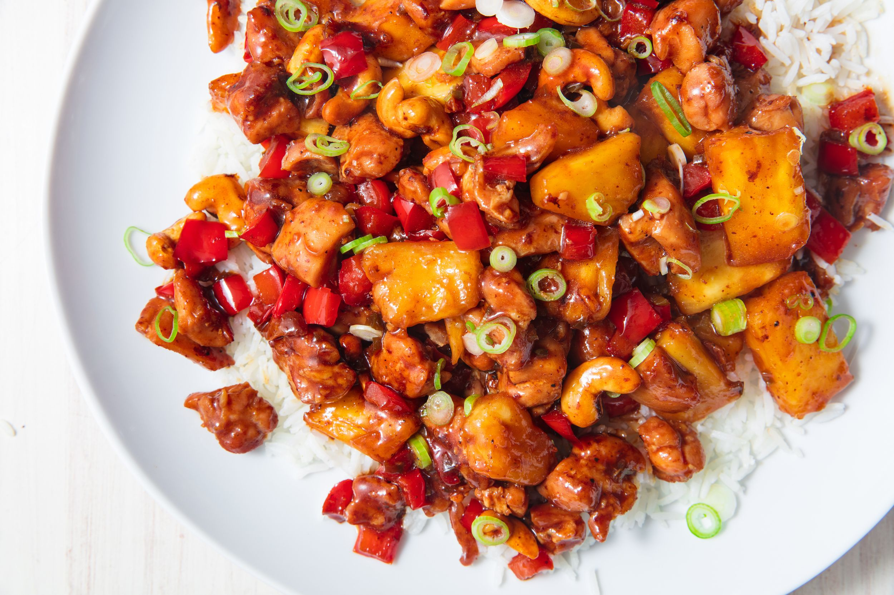

Pineapple Chicken

This is 4 Servings
Ingredients
- 2 tsp Canola or Sesame Oil
- 1 (10-oz) package Frozen Broccoli (or stir-fry vegetable mix), thawed*
- 1/2 C stir-fry Sauce
- 1/4 C Pineapple Juice, use reserved juice from Canned Pineapple
- 1/4 tsp Garlic Powder
- 1/4 tsp Crushed Red Pepper (optional - use if you like it hot)
- 1 (15 oz) Canned Pineapple chunks or tidbits, drained (reserve the juice)
- 2 C diced Cooked Chicken or 2(10-oz) Cans of Chicken Breast (drained and flaked)
Method of Cooking
- Heat the oil in a large skillet over medium high heat. Add all ingredients
EXCEPT the pineapple & chicken. Cook and stir until heated through, 5-6 mins
- Add pineapple and chicken; cook another 2 minutes. Serve over instant brown rice or whole wheat pasta
- Thaw frozen vegetables in the microwave or by holding the package under cold running water for several minutes